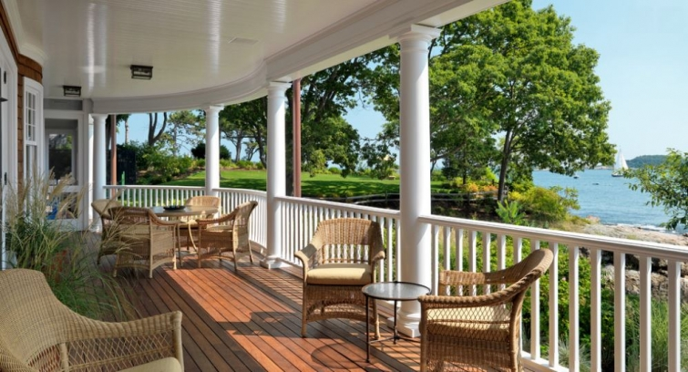
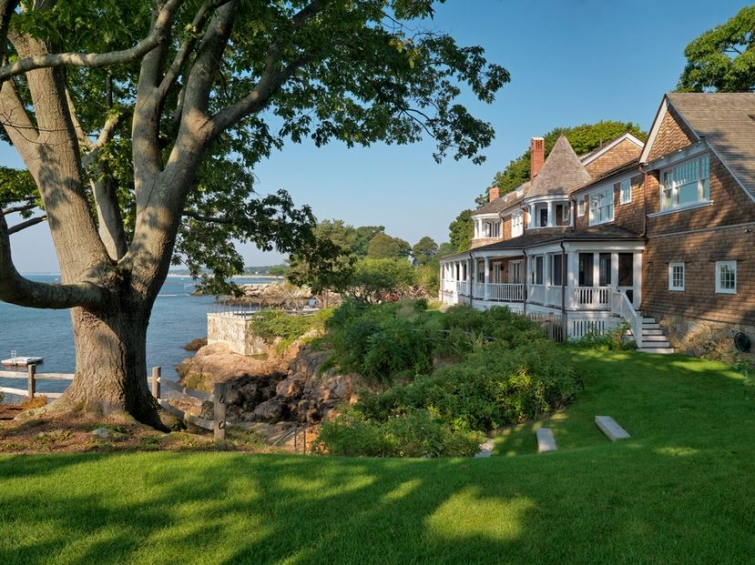

.png)
.PNG)
.PNG)
.PNG)
.PNG)
.PNG)
.JPG)
.JPG)
.PNG)
.PNG)


source
I know I told you I would start the vacation posts this week, but there is a part 2 for the amazing firm of Carpenter and MacNeille that you need to see. My vacation things can wait. 🙂 I think you are going to love these houses.
Let’s start with a new home by Carpenter and MacNeille that has been built on a historic site, located in Manchester by the Sea, Massachusetts. Doesn’t it look like an old inn?
houzz.com photo by Richard Mandelkorn
houzz.com photo by Richard Mandelkorn
Here is one of the bathrooms. What a relaxing view!

houzz.com photo by Richard Mandelkorn
And I know you want to see its lovely kitchen. Notice all the variety of lighting.
houzz.com photo by Richard Mandelkorn
Now let’s take a look at just the kitchen in a wonderful renovation done by the firm. The home is owned by a couple who live year round in London. The husband is British, and the wife is American.This is their second home (i.e. vacation home.) You’ll never believe what that backsplash behind the stove is constructed from – marble? Nope. Petrified wood!
houzz.com photo by Michael J. Lee
I spy Emma Bridgewater dishes in the cabinet there. 🙂
houzz.com photo by Michael J. Lee
Don’t you love the plate rack with all those beautiful platters?
houzz.com photo by Michael J. Lee
Here is another white kitchen that Carpenter and Macneille completed. It is in a seaside carriage house that the firm restored. I really liked the accent of black for the countertops and the sink backsplash.
stephenterhune.com photo by Sam Gray
And one last project from Carpenter and MacNeille..a big one.
The Inn at Castle Hill on the Crane Estate
This was the cottage on the Crane estate in Ipswich, Massachusetts. It was renovated into an inn a number of years ago, with each of its guest rooms decorated by a different designer. Last year, the trustees asked Carpenter and MacNeille to redecorate all the rooms so that there would be continuity in the design of the spaces. The refresh was completed this past spring.
This is the living room:
One of the ten guest rooms:
and its bath.
And finally, the front porch.
I hope you have enjoyed seeing some of the work of the firm of Carpenter and MacNeille. I think I am partial to all of their kitchens! The woodwork done by their firm of Stephen Terhune woodworking really makes all the difference in the quality of their spaces.
I have one more inn to show you, and then the vacation posts will be up with a giveaway for you! 🙂
Until next time…


.PNG)
Such classic styling, and yet, if I may be biased, there is the feel of traditional New England – yes? I think I love best the porch fronting the Crane estate “cottage”, it’s so deep and cozy looking. But, those kitchens, how about that walk-in pantry? Sigh, you really know how to tease us with the eye candy, don’t you, Kelly! Was this the back-to=school week (or should I not mention that?), if so, I hope things got off to a good start. I cannot believe that August will be here tomorrow… soon we will begin to see the shadows deepen and the late afternoon light will have subtly begun to change. In the mornings or at night, there will be cooler temps that remind us of a new season. But, for now, I am off to the Cape and will be enjoying time with old friends, including the beach! (Today, we are “lunching” at the swanky Wequasset Inn on the coast in Chatham – I know there will be some fun shopping on Main Street afterwards. Hello, Candy Manor!)
—————————————————————
Most definitely a feel of classic New England. 🙂 Yes, this was the back to school week….waaaaay too early. I don’t know what in the world they were thinking! I hope you had fun in Chatham…love that little town!
Kelly
I love the lighting in the cabinets! Oh, all the things I would add if I could go back and rebuild our house! All the things I would leave out! haha!
——————————————————————–
I meant to mention that lighting too. Wasn’t that just great?! I would love to add that to our cabinets in the kitchen here too.
Kelly
Hi Kelly,
Better late than never…these are amazing houses in amazing locations but I love the detail of each room you showed as well. What a talented firm.
I’ve never built a house from scratch, but I’d want to be sure I had someone knowledgeable as well as creative on the team.
Karen
———————————————————————–
I am glad you liked the houses Karen. The Carpenter and MacNeille firm is most certainly talented. Building a house from scratch is a ton of work, but I would do it again if given the opportunity, and would especially jump on it if we could work with that firm!
Kelly
My favorite rooms are the kitchens too. Thanks for sharing!
Wishing I was sipping my morning coffee while sitting on that wonderful porch in your first picture posted. Oh, to have property on a waterfront. In my dreams. Thank you once again for the peek at how one lives a more grand lifestyle. Carpenter & MacNeille does lovely work. Love that first kitchen. Well, its time for the reheat on the coffee and I need to go investigate now the smell of over cooked toast. Daughter is getting ready for work. Ha…Back to reality.
Debra
Hi Kelly,
The song “If I had A Million Dollars” keeps running through my head. I would hire this firm! I love their work!! And I am with Nan – I would love to learn more about the Emma Bridgewater pottery.
Megan 🙂
Please tell me more about the EMMA BRIDGEWATER pottery.
Thanks.
———————————————————————-
Nan, I did a post earlier in the year with a link to a few Emma Bridgewater things. It is at the end of the post. You might want to check it out for a little more info. http://www.talkofthehouse.com/downton-abbey-and-a-bit-of-british-design/
Kelly
Kelly,
I love the designs of Carpenter and MacNeille. Blogs like this are the reason that you need to keep blogging.
Thanks for the little escape and if you hear they need a cleaning lady, waitress, greeter or whatever…I am available.
Thanks,
Jeanne
——————————————————————-
Too funny Jeanne! They just might take you up on it! LOL
Kelly
Kelly,
I am so glad that you shared some more Carpenter and MacNeille designs with us. I love the front porch in the first picture, the guest room with the reading nook accented in green and the last porch picture! They really do spectacular work. So neat, clean and pulled together. That bath tub looks like the most relaxing spot with a view. Thanks for sharing their work with us again. I am still anxious to see your vacation post though.